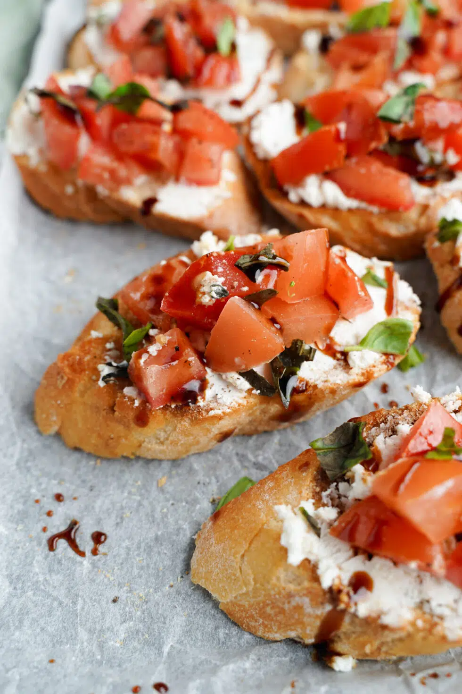

Bruschetta Recipe

Easy Bruschetta Recipe
This is the BEST easy bruschetta recipe & the secret ingredient is goat cheese! Each toasted piece of bread has goat cheese spread on the top before scooping the bruschetta mixture on it. This bruschetta is a go-to summer appetizer that will be asked for again and again!
One of the reasons why I enjoy summer (besides barbecues and sunshine) is because of all the produce that is in-season. Melon and berries often get the spotlight as summer fruits, but think about all the fresh tomatoes! This fruit (we aren’t going to debate on whether tomatoes are fruits or vegetables!) is perfect for one of my favorite appetizers: bruschetta.
Bruschetta — a traditional Italian antipasto — is essentially a tomato mixture on grilled bread slices and is great as an appetizer, snack, side dish or even on its own. They look fancy, but are so easy to make!
With this easy recipe, you’ll be a bruschetta pro and knock the socks (or flip-flops) off your guests all summer long.
Ingredients
- baguette slices - You can get a whole loaf and slice it or get them pre-sliced
- roma tomatoes, garlic, and basil leaves - The fresher these ingredients the better, as they are the star of the bruschetta
- ovlie oil, balsamic vinegar, and balsamic glaze - Get the extra virgin olive oil. Any balsamic vinegar and glaze would work
- plain goat cheese - You may get either a goat cheese log, crumbled cheese, or spread. I prefer the log
- salt and pepper - Add a dash of this classic combo to bring out the flavors in your tomato mixture
How to Make Bruschetta
- First, mince your garlic. In a small skillet, heat extra virgin olive oil over medium-low heat. Add minced garlic and saute until lightly golden for about 2-3 minutes—be careful not to burn your garlic. Pour into a large mixing bowl and let cool
- Core and dice your tomatoes. Remove excess liquid by draining chopped tomatoes in a colander and patting them dry on a couple pieces of paper towel (you don’t want a soggy bruschetta!). Once dry add into your bowl with cooled garlic oil mixture
- Stack fresh basil leaves on a cutting board and roll them into a tube. Using a sharp knife, thinly slice the basil into ribbons and transfer to the bowl with diced tomatoes
- Add balsamic vinegar, salt and pepper. Stir gently to mix everything together and set aside to marinate for 30 minutes in the fridge
While waiting for your tomato mixture to be ready, prep the bruschetta toasts:
- Preheat the oven to 400 degrees fahrenheit with a rack in the center of the oven
- Cut the baguette into approximately 1/2” thick slices. Place on a parchment-lined baking sheet
- Brush the top side of the baguette slices with olive oil. Bake at 400 degrees for 5 minutes then broil for 1 to 2 minutes or until the edges are golden brown. Keep a close eye to avoid burning
- Once baguettes are out of the oven, spread a generous amount of goat cheese on each piece then top with the tomato mixture. Finish by drizzling with balsamic glaze
Homepage